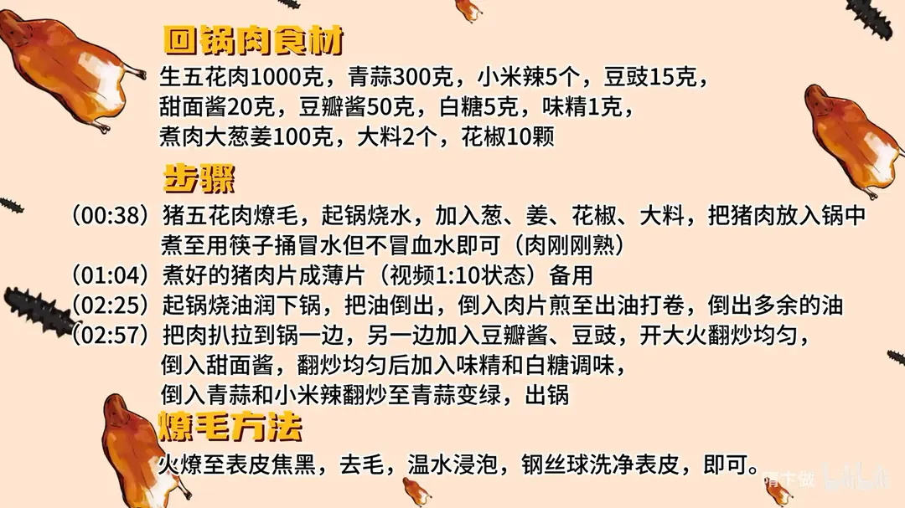

回锅肉
隋卞一做。五花肉先煮后煎到出油打卷，豆瓣酱和豆豉炒出红油。
原视频：https://www.bilibili.com/video/BV1eA4m1L7QY
食材
生五花肉、青蒜、小米辣 等 11 样
| 类别 | 用料 | 用量 |
|---|---|---|
| 主料 | 生五花肉 | 1000g |
| 主料 | 青蒜 | 300g |
| 主料 | 小米辣 | 5 个 |
| 调料 | 豆豉 | 15g |
| 调料 | 甜面酱 | 20g |
| 调料 | 豆瓣酱 | 50g |
| 调料 | 白糖 | 5g |
| 调料 | 味精 | 1g |
| 煮肉 | 大葱姜 | 100g |
| 煮肉 | 大料 | 2 个 |
| 煮肉 | 花椒 | 10 颗 |
步骤
- 煮肉：五花肉燎毛，起锅烧水，加入葱、姜、花椒、大料，把猪肉放入锅中煮至用筷子捅冒水但不冒血水即可（肉刚刚熟）。
- 切片：煮好的猪肉片成薄片备用。
- 煎肉：起锅烧油润下锅，把油倒出，倒入肉片煎至出油打卷，倒出多余的油。
- 调味：把肉扒拉到锅一边，另一边加入豆瓣酱、豆豉，开大火翻炒均匀，倒入甜面酱，翻炒均匀后加入味精和白糖调味；倒入青蒜和小米辣翻炒至青蒜变绿，出锅。
燎毛方法
火烧至表皮焦黑以去毛，温水浸泡后用钢丝球洗净表皮即可。
小贴士
- 煮肉只到刚熟，筷子能捅进去冒水不冒血水，煮过头肉就散了。
- 煎肉时把油炼出来再倒掉，成菜才不腻。
讲解要点
难度：★★☆☆☆（有手就会，关键是煮肉别煮过、煎肉要出油打卷）
为什么这么做
- 先燎毛再煮：毛腥味都在表皮，燎到焦黑、泡软刮净，成菜才没有那股毛味。
- 只煮到刚熟：筷子捅进去冒水、不冒血水就够；煮过头肉散、切片就碎，炒的时候也逼不出油。中间带一点淡血色没关系，后面还要煎。
- 片要尽量薄：薄片受热快，短时间就能出油打卷、表面煎干；厚片外面焦了，里头还没怎么出油。
- 热锅润油后倒掉，不再放油：五花肉本身油足，先放油炒出来就是一盘油；润锅只是防粘。
- 煎到打卷再把油倒出去：一是把油逼出来吃着不腻，二是表面煎干了才吸得进酱味。
- 豆瓣酱、豆豉要大火炒香：豆瓣的红油和豆豉的酱香得高温才出得来；肉扒到一边，让酱直接贴锅底受热。
- 青蒜变绿就出锅：青蒜断生就够，炒久了发黄、那股清香味就变成臭味。
容易翻车
- 肉煮过头，切片散、下锅也卷不起来。
- 煎肉时急着翻动，肉片粘锅破皮；要等它自己出油再动。
- 油太多时下豆瓣酱，酱被油「泡」着炒不香，只剩死咸。
- 豆瓣酱、甜面酱本身都有咸味，再加盐就咸了。
- 青蒜炒久发黄，整盘颜色和味道都塌。
热评补充
- 有网友对比两地馆子：冷链久了的肉煮出来带「冰箱味」，新鲜白肉是透明、带温、没有异味的。做回锅肉同理，肉一定要新鲜，冻太久的肉再怎么炒也盖不住腥味。
原片尾卡

原片文案
AI 字幕校准稿
回锅肉最关键的一点是：当天煮的肉怎么炒才好吃。选一块厚的五花肉，我这个版本不要求你选什么坐板肉，只要肥瘦相间的，怎么方便怎么来，家庭版嘛。
先把毛燎一下，冲一下。然后把这个肉搁在水里去煮，水里加上葱姜、花椒、大料，肉放进去。
到点了看一下煮到什么程度：筷子能拔上来，可以冒水，但是不能冒血水，就没问题了。你们煮出来肉中间可能会有一点点生、淡淡的血色，这是没有问题的。尽量稍微切薄一点，大概这个厚度就行了。
起锅烧油，把锅润一下，把油倒掉。然后我们把切完的五花肉片倒进去——不用倒油。五花肉倒进去之后甭搭理它，慢慢让它炒出油，就跟煎一样，炒一会儿就不扒锅了。
看，都打卷了吧，把多余的油咱们倒出点来。然后把肉放在一边，把豆瓣酱、豆豉放进去，开大火。五花肉一是把油炒出一部分来，吃着不会腻；第二，表面一干，就更容易吸收味道。
把甜面酱倒进去，加入味精、白糖，然后把青蒜倒进去，青蒜变绿就可以出锅了。
太香了。我是知道它好吃的，但是我没想到它这么好吃。刚才白水煮的那个肉我也尝了，肉香味已经很足了；炒干以后，它把豆豉和豆瓣酱的味道吸得很足，表面有一点点焦，甚至于脆脆的，但是里面还有肉的那种软嫩香。所以给大家引申出来一点：做回锅肉，肉一定要新鲜。你把这个视频从头看一遍，就知道回锅肉就是一道有手就会做的菜。
整理自「隋卞一做」系列视频，仅供个人学习。